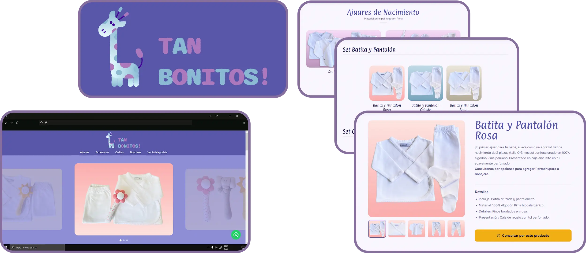

Project Overview
MY ROLE
Brand Strategist, UX/UI Designer, Frontend Developer
TIMELINE
1.5 Weeks (Rapid Concept to Launch)
DELIVERABLES
Brand Identity, Custom Website, B2B Sales Funnel
The Strategic Foundation: From Market Mismatch to Brand Clarity
1. Translating Emotion into the Brand
2. The UX Blueprint for a Dual Audience
The Development Process: Building an Interactive Catalog
The Professional Product Showcase
The Low-Friction WhatsApp Funnel
The Outcome: A Credible Brand with a Dual-Purpose Tool
Veronica P. Founder, Tan Bonitos!